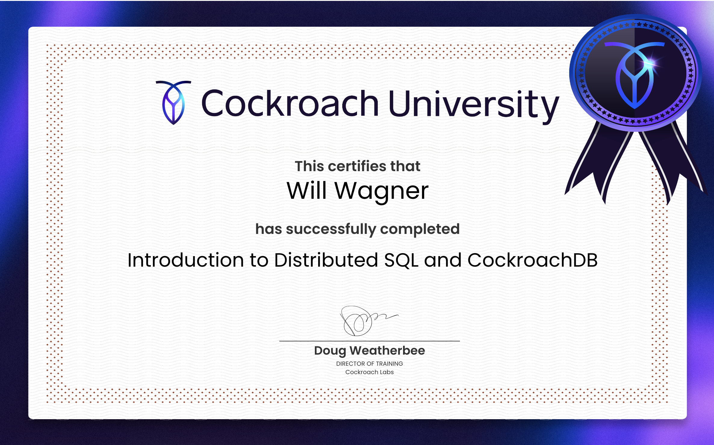

Objective: Seeking to leverage my expertise in Business Intelligence, Data Science, and Software Engineering, utilizing advanced algorithms to innovate and drive success in a dynamic tech environment.
Skills:
- Extensive expertise in complex multi-source ETL, Data Warehousing, and Business Intelligence technologies, with a strong focus on designing and implementing algorithms to optimize data integration and analytics.
- Proficient in architecting, developing, and deploying BI solutions, specializing in both real-time reporting against transactional data for immediate insights and batch processing utilizing Data Warehouses for historical analysis.
- Skilled in creating dynamic enterprise dashboards and reporting systems to cater to varied business needs and data timeliness requirements.
- Certified MicroStrategy Engineer (MCE), adept with MicroStrategy product suite across Windows and Linux (RHEL) environments for comprehensive reporting solutions.
- Proficient with a variety of databases, including DB2, MS SQL Server, MySQL, Oracle, and PostgreSQL, for comprehensive data analysis and reporting.
- Employ JIRA, Salesforce CRM, and ServiceNow to streamline project management processes, enhancing team agility and project delivery effectiveness. Integrate version control best practices with tools such as GitHub to bolster collaborative development and ensure codebase integrity.
- Acquired foundational knowledge through educational pursuits in Big Data technologies, with a focus on GCP platforms such as BigQuery, AutoML, and VertexAI, complemented by practical experience with Hadoop and Apache Drill.
- Proficiency in utilizing analytics and visualization tools like MicroStrategy, Looker, Tableau, and Business Objects to derive actionable insights.
- Utilize Python, shell, and MicroStrategy Command Manager for automation scripts, leveraging JavaScript to enhance dashboard functionality.
- A high-technology professional with a broad range of experience in engineering and business across various sectors including pharmaceuticals, apparel, health insurance, internet advertising, marketing, and finance.
- Passion for solving complex technical and business challenges through collaborative team efforts and a love for working alongside talented individuals from diverse backgrounds.
Experience:
-
INWGR - Intelligent Network of World-Generative Resources, Costa Mesa, CA Founder & Chief Architect (Jul 2024 – Present)
- Founded and currently leading INWGR, a forward-thinking initiative dedicated to creating AI agents that act as digital twins for humans, automating a wide range of tasks. My role involves setting strategic goals for both short-term and long-term AI development, with a focus on innovation, practical applications, and ethical considerations. While INWGR is a passion project pushing the boundaries of AI, I remain open to new opportunities to apply my expertise and collaborate on impactful solutions.
- Architect and implement a data warehousing strategy that integrates Oracle Financials ERP modules such as Accounts Receivable (AR), Accounts Payable (AP), Cash Management, Fixed Assets, Procurement, Inventory Management, and other pertinent data sources. Manage ETL development initiatives, leveraging DataStage and Oracle Financials to enhance data workflows and boost the reliability of business analytics tools.
- Spearheaded the creation of specialized financial and customer experience reports and dashboards, employing HTML, CSS, and JavaScript for select advanced analytics visualizations.
- Utilized Distribution Services for efficient report dissemination, ensuring timely delivery of insights to stakeholders.
- Innovated with automated solutions for report distribution via Google Drive, enhancing the accessibility and management of business intelligence data.
- Developed a Confluence SaaS-based BI User Portal, enhancing real-time user interaction with a suite of operational tools and custom scripting.
- Implemented a Python-based monitoring system for automated email alerts, promoting server uptime and system reliability.
- Implemented JavaScript toggles in the UI, using a Google Drive file for script settings storage, enabling quick activation and deactivation of BI reporting automation without the need for a database.
- Composed Python scripts for data manipulation and server health monitoring, enabling immediate notifications and operational tag updates for clear communication during system outages.
- Streamlined the MicroStrategy user creation process with ServiceNow, integrating approval workflows and automating profile setups, while also establishing a manager-based hierarchy access system, ensuring managers have secure visibility into their own expense data and that of their subordinates.
- Automated the retrieval and integration of data feeds from Concur SAP into the reporting system, enhancing data availability for refined reporting and analytics.
- Spearheaded the StatsLite business intelligence platform's creation, significantly boosting ad placement tactics for top publishers. With the Creative Strategist (CS) guiding the charge, we heightened search visibility and refined ad displays, using clickstream analytics to bolster campaign performance. Our Ad Optimization Strategists (AOS) and Account Managers (AM) collaborated, applying key metrics like click-through rates and engagement times to deliver Yahoo's sales team actionable insights into user behavior. This integrated approach led to smarter, data-driven decisions, redefining advertising success.
- Refined the management of Insertion Order (IO) ad campaign budgets, defined by customers for designated advertising periods, by designing and implementing algorithms that ensure the efficient allocation of funds. Our approach leveraged algorithms to analyze close to real-time performance data and user engagement trends, guaranteeing that customers' advertising budgets were optimally utilized throughout their campaigns. This strategic oversight not only maximized return on investment but also significantly improved the relevance and effectiveness of ads for end-users.
- The strategic tools and actionable insights generated by the StatsLite platform empowered us to customize ad campaigns with unmatched precision. This initiative resulted in a remarkable uplift in user engagement and a notable boost in the success rates of advertising campaigns, showcasing the unparalleled benefits of data-driven strategies in the evolving landscape of digital marketing.
- Designed an innovative, cross-platform ad marketplace with sophisticated audience targeting, utilizing JavaScript and HTML5 to deliver seamless experiences on a variety of devices.
- Championed big data initiatives, integrating Hive and Apache Drill with Hadoop ecosystems to provide deep analytics insights, setting new standards for data exploration and utilization.
- Devised strategic performance dashboards, upholding campaign fidelity and partner agreement adherence, directly contributing to trusted business relationships.
- Delivered outstanding support and enhancements for a large-scale analytics platform, enabling data-centric strategic growth and optimizing business processes for over 1000 end-users globally. Worked on MicroStrategy SDK enhancements enforcing business rules and displaying data availability at MicroStrategy web interface (Web SDK and dashboard plugins utilizing HTML, CSS & JavaScript).
- Worked on developing a SaaS model to support Healthcare Analytics.
- Developed and oversaw Microsoft SQL Server data warehouses for renowned studios including Sony Pictures Studios, NBCUniversal, Paramount Pictures, 20th Century Fox, Warner Bros. Entertainment, The Walt Disney Studios, CBS, and others, impacting health and pension plans of over 110K members.
- Revolutionized claims processing by innovatively using MicroStrategy as a robust claims assignment and distribution system, significantly streamlining operations and enhancing both efficiency and accuracy.
- Created advanced analytical models and interactive dashboards, equipping executives with critical insights for participant eligibility and claims management.
- Engineered and refined ETL processes for data consolidation, enhancing the data warehouse integrity and supporting comprehensive analytics for strategic decision-making.
- Identified and preempted fraudulent activities through sophisticated analytics, strengthening system trustworthiness.
- Worked collaboratively with analysts and stakeholders to convert complex requirements into customized BI solutions, providing decision-support tools and improving user engagement.
- Automated and optimized SQL-based data retrieval, significantly expediting the availability of actionable intelligence for key business indicators.
- Oversaw BI operations, optimizing ETL and database management, while maintaining MicroStrategy platforms to ensure ongoing operational excellence.
- Collaborated with stakeholders to create tailored reporting systems, maximizing resource utilization and optimizing database performance.
- Led the development and implementation of Market Basket analysis within the CRM framework to identify key product affinities, significantly influencing inventory management and personalized marketing strategies.
- Automated complex reporting mechanisms, partnering with the Finance team to streamline financial data workflows.
- Managed the integration of nationwide store and online customer data into the data warehouse, implementing a rolling update process that ensured reporting accuracy across various time zones and supported real-time insights into customer behavior and loyalty program performance.
- Developed comprehensive MicroStrategy-driven initiatives for promotions, pricing, and vendor compliance, bolstering business processes.
- Maintained data integrity through strategic data warehousing techniques, such as Slow Changing Dimensions, during product lifecycle changes.
- Crafted reusable SQL scripts and FTP tools to accelerate data processing and ETL efficiency.
- Successfully spearheaded key system upgrades and custom module development for warehouse management, improving operational workflows.
- Pioneered a quality control module keyed to vendor performance, enhancing product intake efficiency.
- Streamlined the returns process with a user-friendly Return to Vendor module, promoting transparency and efficiency.
- Deployed database auditing tools that provided vital change tracking and data integrity within the logistics infrastructure.
- Led the migration and modernization of enterprise resource planning (ERP) systems, streamlining operations for the Biomedical division's divestiture.
- Innovated automated document management solutions, enhancing distribution and reporting efficiencies, and significantly reducing manual workload.
- Implemented database integration and automated data exchange protocols to optimize global supply chain and export compliance procedures.
- Pioneered the development of a flexible e-commerce back-end infrastructure, adapting to diverse sales platforms and improving order fulfillment cycles.
- Advocated for and implemented an enterprise-wide analytics and business intelligence platform, advancing data-driven decision-making capabilities.
- Coursera, Machine Learning by Stanford University (class of Andrew Ng) (May 2016 to August 2016)
- MAPR Academy, on-line (April 2015 to September 2015) Apache Drill, HBase, Hadoop
- MicroStrategy University, El Segundo and on-line (February 2006 to August 2009)
- LUG – IBM Large User Group Conference and Training (June 2006, Rochester, MN)
- Santa Monica College, Santa Monica, CA (September 1994 - December 1997) Computer Science
- Moscow Civil Engineering University, Moscow, Russia, (September 1984 - June 1989) MS Degree, Mechanical and Civil Engineering
- Certified MicroStrategy Engineer (MCE)
- System and method for verified predictions and performance
- Systems and Methods for User-Specified Exchange for Message Channel Data
- Systems and Methods for Targeting Electronic Content Using Virtual Tokens on User Devices
- Comparable Stories
- 2024 Yahoo Master Inventor of the Year LinkedIn Post
- English
- Russian
- Location: COSTA MESA, CA 92626
- Phone: (310)270-5533 (Cell)
- Email: wowagner2015@yahoo.com
- LinkedIn: https://www.linkedin.com/in/will-wagner-4174b06/
- Video: https://www.youtube.com/watch?v=9T4VDa3pQVw
- Coursera Certificate: https://www.coursera.org/account/accomplishments/certificate/6QNWE54UQHMW Cocroach DB Cerfificate 
-
Systems and Methods for Targeting Electronic Content Using Virtual Tokens on User Devices
US20240104602A1 · Filed Sep 26, 2022
See patentPatent 'Systems and methods for targeting electronic content using virtual tokens on user devices' enhances targeted electronic content delivery. It uses virtual tokens to capture user consent and preferences for content campaigns across multiple platforms. By aligning content provider campaigns with user-specific tokens, this method ensures personalized content delivery on preferred platforms, respecting user preferences and optimizing engagement. This approach marks a significant advancement in digital marketing and personalized content strategies.
-
Systems and Methods for User-Specified Exchange for Message Channel Data
US20240106779A1 · Filed Sep 23, 2022
See patentThe patent discusses a method and system for managing and exchanging message channel data based on user-specified parameters. It involves receiving parameters from both data providers and recipients, using a matching engine to identify compatible data exchanges, and processing the data accordingly. The system segments the data into permitted and non-permitted portions based on the providers' parameters and delivers the allowed segments to the recipients who match the criteria. Compensation is also initiated for the data providers according to their terms. This method aims to balance the privacy preferences of data providers with the data needs of recipients, allowing for tailored data exchanges in an online environment.
-
System and method for verified predictions and performance
US2024070201A1 · Filed Aug 31, 2022
See patentThe "System and Method for Verified Predictions and Performance" enhances prediction reliability by creating a communication chain of independent units, each dedicated to specific prediction services for designated prompts. This innovative framework addresses the limitations of traditional prediction markets, such as their ethical concerns and complex payout structures, by leveraging network-based technology for rapid and widespread information dissemination.
Key features include:
Modular Chain Units: Each unit independently manages prediction services related to specific prompts, ensuring scalability and efficient resource management.
Dynamic Request Handling: Requests for prediction services are either directed to an existing unit associated with a specific query prompt or lead to the creation of a new unit tailored to the query, enhancing responsiveness and specificity.
Verification and Validation: The system emphasizes the verification of predictions to enhance their credibility, crucial in an era where digital information can be ambiguous.
The system is designed to not only facilitate the generation and management of predictions but also ensure their accuracy through structured verification processes. Users can interact with various operations such as submitting predictions, requesting verifications, and accessing validated predictions in real-time.
Overall, this invention provides a robust solution to the challenges of maintaining accuracy and trust in digital predictions, making it particularly valuable across various sectors including finance, weather forecasting, and social media analytics. It represents a significant advancement in the field of data verification and management. -
Comparable Stories
US20230053495A1 · Filed Aug 17, 2021
See patentOne or more computing devices, systems, and/or methods for providing comparable items for a query item are provided. The approach involves constructing a query based on a set of similarity and difference characteristics specified for a query item. The executed query identifies comparable items that share similar characteristics and differ in specified ways, enhancing the relevance and diversity of search results.
-
Verizon Media / Yahoo! Inc., Playa Vista, CA Senior Business Systems Analytics Architect, Enterprise Application Products (Sep 2016 – Jun 2024)
Education:
Certifications:
Publications & Patents:
Awards & Recognitions:

Languages:
Contact:
Additional Links: